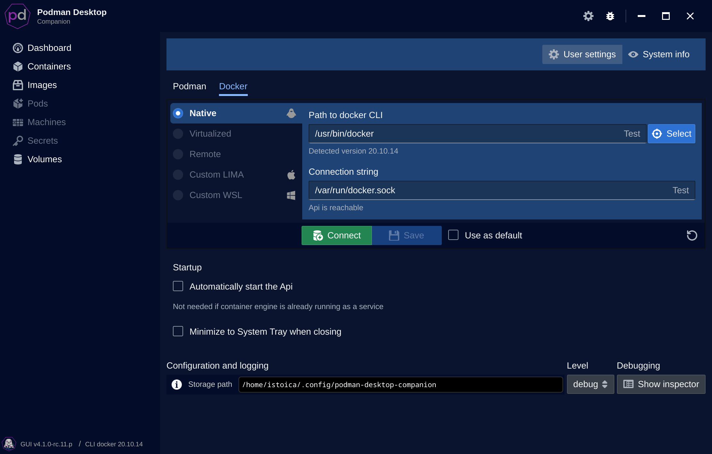

Cross-platform desktop integrated application with consistent UI
Podman Desktop Companion works on Windows, Mac and Linux providing the same graphical interface.
Learning tool for the powerful podman command line interface
Podman Desktop Companion is great for skills improvement and learning features of 'podman'.
Essentials at your fingertips
The dashboard offers just the essential features so that the users can feel right at home.
See below what you can manage with Podman Desktop Companion.

Cross Platform
- Application looks the same everywhere, no mental mapping!
- Completely informs its users of where it stores logs and settings.
- Allows users to debug and understand what is happening behind the scenes.
Multiple engines
- Fast native on Linux only
- Virtualized for any OS
- LIMA for MacOS
- WSL for Windows
- Both podman and docker engines
- Others are planned


Containers
- Be informed about the origin and status of your container environment.
- Quickly access logs, environment variables, mounts, opened ports and monitoring stats.
- Perform common maintenance operations, stop, restart and remove easily.
- Direct access to the exposed services using your browser.
- Gain control of all that happens in the container using the terminal console.
Images
- Be informed about the origin and status of local image store, their registry, name and tag.
- Immediately spawn new containers from image, customize name, port mappings and available mounts.
- Quickly access image build-up, check their impact and debug their setup.
- In-depth configuration viewer.
- Perform common maintenance operations, pull latest updates to refresh the images, push latest changes to a distributed image project.


Security
- In-depth awareness of security checks
- Be informed of know vulnerabilities
- Helps creating and maintaining secure systems
Networks
- Create and reuse networks at any moment.
- Know detailed setup of each network


Pods
- Full power of pods on supported engines
- Access logs, processes and details.
- Generate kube and perform common actions
Machines
- Manage all available podman virtual machines, create new ones or decommission what is redundant.


Secrets
Be aware of all available secrets, define new ones or purge old from existence.
Volumes
Manage shared volumes across containers, limit repetition and also be portable.